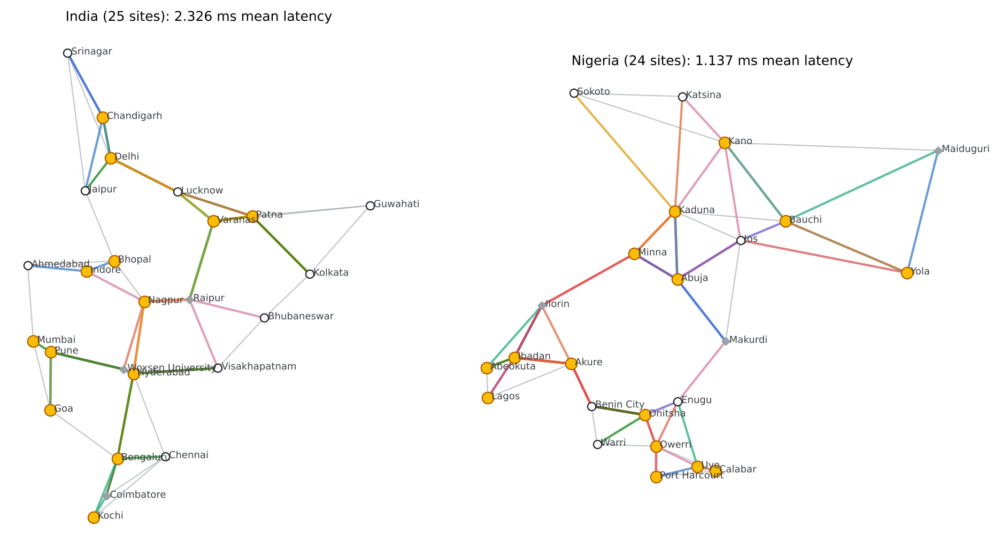
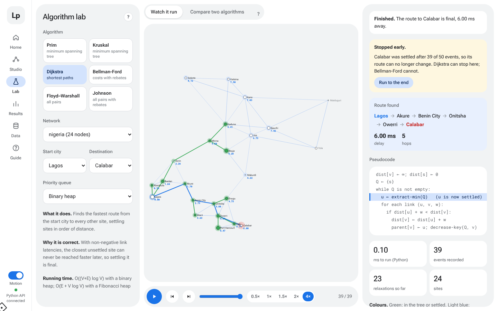
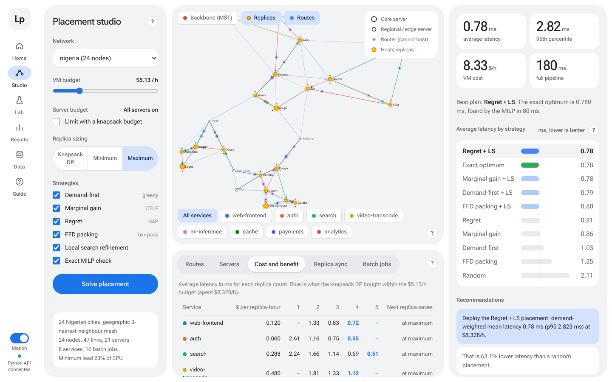
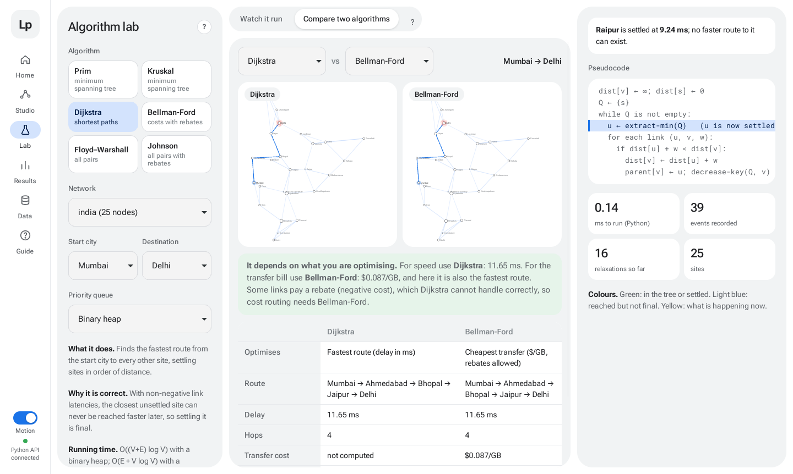
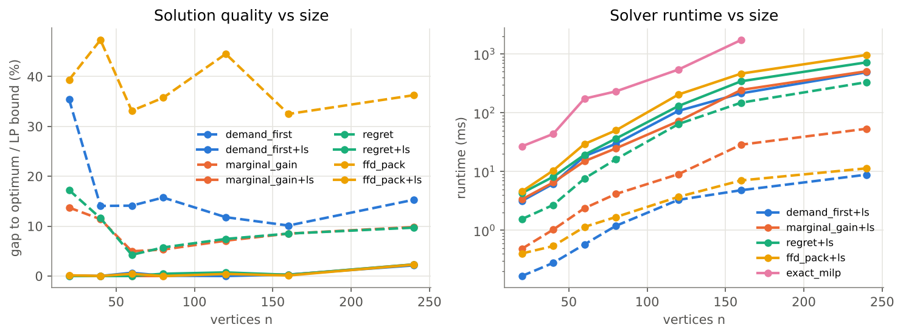

Latency-aware cloud task placement on network graphs
Where should copies of each cloud service run, so every user is one short path away, without overloading servers or breaking the budget?

A user in Kochi served from Delhi waits for every request to cross the country. A copy closer by is fast, but every copy costs money and uses server capacity.
each with CPU, memory and a $/hour cost
weight = latency in ms, from real distance
requests per second from each city for each service
Why it is hard: it contains the classic p-median problem, which is NP-hard. So we solve the easy parts exactly, the hard part with fast greedy methods, and measure how close they get to the true optimum.
Exact check (the referee): on smaller networks a mixed-integer program (MILP, HiGHS solver) finds the proven optimum. Every heuristic reports its gap from it — so we never just claim our answer is good, we prove how good.
Settles the closest city first; its distance is then final. Fast, stops early at the destination.
Relaxes every edge V−1 rounds. Handles rebates (negative costs) and detects negative cycles.
DP over intermediate cities: d[i][j] = min(d[i][j], d[i][k]+d[k][j]). Builds the full latency table.
Bellman-Ford once to reweight edges ≥ 0, then Dijkstra from every city. Better on sparse graphs.

Algorithm Lab: Dijkstra from Lagos to Calabar, step by step with pseudocode — the blue line is the final route. The code picks automatically: sparse → Johnson/Dijkstra, dense → Floyd–Warshall.
Prim grows one tree using a priority queue. Kruskal sorts edges and uses union-find to skip cycles.
Both give the same cheapest tree (cut property). Rule: Prim if E > V log V (dense), else Kruskal.
Each server is on or off (0/1), has a cost and a benefit, and the budget is the knapsack capacity. DP gives the exact best set.
For each service pick exactly one option — 1, 2, 3… copies — each with a cost and a latency saving, all within the VM budget.
Try moving one copy or swapping two; keep any change that lowers latency; repeat until nothing improves.
| Method | Greedy alone | + Local search |
|---|---|---|
| Random placement | 167 % | — |
| FFD packing | 38.4 % | ≈0.5 % |
| Demand-first | 16.7 % | ≈0.5 % |
| Regret | 9.2 % | ≈0.5 % |
| Marginal gain | 8.7 % | ≈0.5 % |
Averaged over Waxman networks of 20–240 servers. Worst case after local search: about 3 %.
An exact DP must remember every server's remaining capacity, so its table grows with the product of all capacities. That is fine for about 8 servers but impossible at 25–150. We use DP where its tables stay small (budgets) and greedy + local search where they would explode.
An exact solver (MILP) is used only as a referee: it proves the true optimum on smaller networks, and every greedy reports its gap. Result: about 0.5 % from optimal. Every algorithm that builds the plan is our own code.
| MST | Prim, Kruskal + union-find |
| Single source | Dijkstra, Bellman-Ford |
| All pairs | Floyd–Warshall, Johnson |
| Dynamic programming | 0/1 and multiple-choice knapsack |
| Greedy | 4 schedulers + local search, LPT batch |
| Priority queues | binary, Fibonacci, pairing, lazy |
Each one has a real job: negative rebate costs are why Bellman-Ford and Johnson are needed, not just added for the list. Choices between alternatives are made automatically and tested by experiments.


Live map: requests travelling to their nearest copy.
Pick a network and budget → Solve → plan, routes, advice.
Watch any algorithm from a start to a destination, or compare two.
Experiment charts, downloads and a guided tour.
Python engine (NumPy, SciPy HiGHS) · FastAPI · React. Works offline too.
average latency, India network
vs a random placement
from the proven optimum
automated tests, all passing

Fibonacci heap: best Big-O, but slower in practice (25.9 vs 17.7 ms) — pointer overhead beats the theory.
All pairs: NumPy Floyd–Warshall beat Johnson at n = 400 (277 vs 5015 ms dense).
MST: Kruskal wins sparse, Prim wins dense — exactly as theory predicts.
Budget & density: more money or more links → lower latency, with diminishing returns.
A complete system: 6 graph algorithms, 2 knapsack DPs, 4 greedy schedulers, 4 priority queues, an exact solver, 10 networks, 8 experiments and an interactive website.
Greedy + local search lands within ≈0.5 % of the optimum, ≈5× faster than the exact solver. Placement cut latency by up to 64 %.
Big-O is a guide, not a verdict — constant factors and graph density decide the winner. Always check heuristics against an exact answer.
Questions? Live demo on the website.